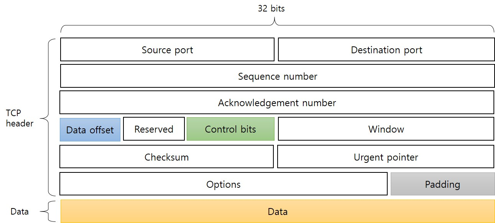

2. TCP Segment
TCP messages are called segments, the name describes the fact that each is a part of the entire data stream between the devices. TCP segments are flexible and are utilized for various purposes. A one field format is used for all segments, with several header fields that perform the many functions and features for which TCP is in charge.
2.1 TCP Segment format
Header minimum size is 20 bytes and the maximum are 60 bytes.
2.2 TCP Segment field descriptions
| Field Name | Size (Bits) | Description |
|---|---|---|
| Source Port | 16 | The port number of the process which is sending the TCP segment on a source device. |
| Destination Port | 16 | The port number of the process which is receiving the TCP segment on a destination device. |
| Sequence Number |
32 | For regular transmissions, this is the sequence number of the first byte of data in this segment. It is used to reassemble the message at the receiving end if the segments are received out of order. |
| Acknowledgement Number |
32 | When the ACK bit is set, this segment is acting as an acknowledgment, and this field contains the sequence number the source is next expecting the destination to send. |
| Data Offset | 4 | The number of 32-bit words in the TCP Header. This indicates where the data starts; in other words, an offset from the beginning of the TCP segment. |
| Reserved | 6 | Reserved for future use, must be filled with zero. |
| Control Bits | 6 | There are six kind of 1-bit Control Bits that regulate connection establishment, connection termination, connection abortion, flow control, mode of transfer etc. The 6 bits are described in chapter 3.1. |
| Window | 16 | This indicates the bytes of data the sender of this segment is willing to accept from the receiver at one time. This generally represents to the size of the buffer assigned to accept data for this connection. |
| Checksum | 16 | It is used to preserve the TCP segment against errors in transmission. This is a checksum for data integrity protection, computed over the TCP datagram. In addition to, a special pseudo header of fields. |
| Urgent Pointer | 16 | This is used in relation with the URG control bit for priority data transfer. This field contains the sequence number of the last byte of urgent data. |
| Opinion | Variable | TCP has a common mechanism for including one or more sets of optional data in a TCP segment. Each of the options can be either one byte in length or variable in length. The first byte is the option-kind sub-field, and its value defines the type of option, which indicates whether the option is just a single byte or multiple bytes at the same time. |
| Padding | Variable | If the options field is not a multiple of 32 bits in length, necessary zeros are added to pad the header, so the size of the TCP header become a multiple of 32 bits. |
| Data | Variable | This is the bytes of data being sent in the segment. |